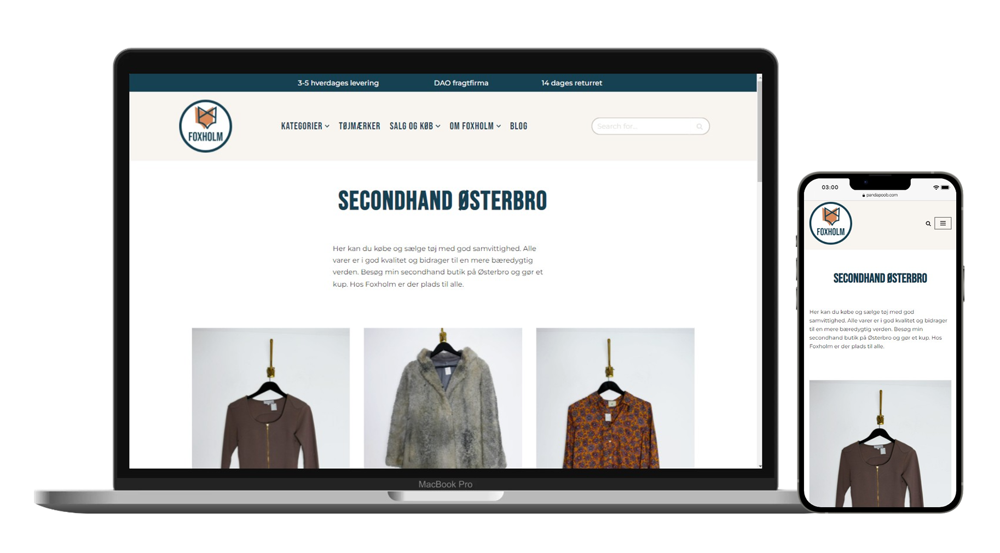

Mockup
Introduction
Tech stack: Wordpress, WP REST API, Pods, PHP & CSS (childtheme)
During this project I worked in a group to redesign Foxholm's website. In order to do this we used the process method "design thinking", which means that we worked iteratively through the different phases. We worked with the CMS system Wordpress to make the website and created our own child theme in order to customize and have more control over the style. A lot of results from research went into consideration while redesigning the website and no decision was made without documentation.
UX
When analysing Foxholm's former website the menu and navigation was very confusing and overwhelming. Not only did the menu items have dropdowns but even some items in the dropdowns had dropdowns so you were able to expand the dropdown further than the viewport. Therefore we simplified the menu and tested what menu item names made the most sense for the users. We kept the menu item categories but only for clothing items and made a seperate menu item for brands. Furthermore we removed sizes from the menu and moved them to the individual pages of the categories.
See expanded sitemap here!
Wordpress process
Setting up the actual pages for all of Foxholm's wares with a filter required us to download the wordpress-plugin Pods so we could store our data. We created Custom Post Pods for all of our wares where we added "fields", the information we wanted displayed in our loop and singleview.
In WordPress we created the pages that we wanted the loopview and filtering on and gave the pages unique "slugs". Then we created php pages in our child theme and linked them with the desired Wordpress page via the "slugs". We got the data through Wordpress' REST API and then through JavaScript code we put our data into our template/article, that we made in the php file. To get the desired loopview we then cloned the article.